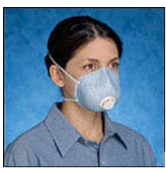

Personal protective equipment in the laboratory
Personal Protective Equipment Requirements for Laboratories The primary methods for protecting employees and students in a laboratory against hazards such as chemical, biological, radiological, physical, and mechanical hazards in the work environment are elimination, engineering, and administrative controls. Where these control methods are not appropriate or sufficient to control the hazard, personal protective equipment (PPE) is required. PPE is also required in conjunction with other controls to mitigate the impact should an incident occur.
Minimum PPE
Visitors to a lab: protective eyewear is the minimum PPE required for a “no touch” visit to a laboratory or other areas where chemical, biological, radiological, or mechanical hazards are present. For labs where chemical, biological, radiological hazards may present a risk to the visitor, a lab coat shall also be provided.
Staff/Students/Volunteers working in a lab: a lab coat, protective eyewear, long pants and closed toe shoes are the minimum PPE for work in a laboratory where chemical, biological, radiological, or mechanical hazards are present. This clothing shall be supplemented, as necessary, with the appropriate gloves and other personal protective equipment (PPE) necessary for the tasks to be performed.
PPE Selection/ Requirements
Below is a list of the most common PPE needed in a research laboratory setting. For additional PPE considerations that may be required such as steel-toed shoes for protection against falling or rolling heavy objects or cut resistant gloves when working with sharp objects, please refer to the Personal Protection Equipment PPE webpage.
- Eye Protection
- Body Protection
- Face Protection
- Hand Protection
- Respiratory Protection
- 1. Eye Protection
- 1.1. Safety glasses or chemical goggles must be donned before entering any wet bench lab, including cell culture labs. This applies to lab visitors, GT maintenance and custodial workers as well as staff and students.
- 1.2. Safety glasses must meet the ANSI Z87.1 - 2010 standard for impact resistance and have side shields for splash protection.
- 1.3. Chemical goggles may be required for certain processes where safety glasses are deemed inadequate.
- 1.4. Safety glasses or goggles must be worn over prescription glasses. Safety glasses worn over prescription glasses must be of a type intended for this purpose (Often referred to as Over the Glass Safety Glasses). Regular prescription glasses will not provide adequate protection in this case.
- 1.5. Prescription safety glasses are acceptable as long as they have side shields for splash protection. (Check with your department to see if they fund such purchases.) Side shields must also meet the Z87.1 standard for impact resistance and be non-vented.
- 1.6. Safety glasses or goggles are required all labs where soldering or machining/grinding occurs.
- 2. Lab Coats (Body Protection)
- 2.1. Shall be donned before handling chemicals, biologicals, or unsealed radiological sources.
- 2.2. Shall cover the wearer to the knees
- 2.3. Lab Coat fabric of poly-cotton blends are acceptable. Exceptions include:
- 2.4. Labs were open flames are used (such as alcohol burners)- lab coat must be made of 100% cotton or flame resistant material.
- 2.5. Labs where pyrophoric materials are handled- lab coat must be of flame resistant materials.
- 3. Face Protection
- 3.1. Face shields worn over safety glasses may be required for certain processes as determined by the Principle Investigator (PI) and/or GT EHS.
- 3.2. Face shields must always be worn over safety glasses or goggles, not instead of safety glasses or goggles
- 3.3. Processes involving high pressure reactors (>30 PSI) or pneumatic lines (>30 PSI), high pressure air lines, machining operations, and some cryogenic procedures require the use of face shields over safety glasses.
- 4. Hand Protection
Chemically Resistant Gloves
Gloves, especially, should be chosen carefully: They must be resistant to the chemicals being used but also not put the wearer at risk because of loss of dexterity, risk of ergonomic injury (such as increased muscle strain from gloves that are too heavy or stiff for pipetting, handling small objects, etc.), or increased risk of being caught in rotating equipment from gloves that are too loose on the user’s hands.
General Rules Regarding Chemically Resistant Glove Use
Nitrile exam gloves are the general purpose glove of choice in all Georgia Tech wet bench labs.Cell culture labs, labs that deal with only biological samples or live animals, and labs where the purpose of glove use is to protect the product or the lab from human skin oils, may use powder free-latex gloves. Select gloves which are appropriate for the chemical(s) being used and also the processBefore use, check gloves (even new ones) for physical damage such as tears or pin holes and for previous chemical damage: this is especially important when dealing with dangerous materials such as HF (Hydrofluoric Acid).When working, it may be advisable to wash the external surface of the gloves frequently with water.Most chemically resistant gloves, especially lightweight disposables, are combustible: keep hands well away from unprotected flames or other high temperature heat sources.When removing gloves, do so in a way that avoids the contaminated exterior contacting the skin (see diagram)
- A. Wash hands after removing gloves.
- B. Dispose of contaminated gloves properly.
- C. Do not attempt to re-use disposable gloves.
- D. Never wear possibly contaminated gloves outside of the laboratory or to handle telephones, computer keyboards, etc.
- 5. Respiratory Protection
Respirators are a last resort when it comes to protecting people in the workplace. Under the Georgia Tech Respiratory protection program and the Federal Respiratory Protection Standard (29 CFR 1910. 134) employers are required to determine that no other method of protecting the employee is feasible before resorting to the use of respirators.What is a respirator?A respirator is a device designed to protect the wearer from inhalation of harmful substances. When chosen correctly and used properly, respirators can protect the wearer from harmful gases, mists, vapors, fumes, and fine particulates. Respirators fall into the following two general classifications, according to mode of operation:
- 5.1. atmosphere-supplying respirators
- 5.1.1. supplied air (SA) or air line respirator
- 5.1.2. self contained breathing apparatus (SCBA)
- 5.2. air-purifying respirators
- 5.2.1. N-95 filtering face piece respirator 
- 5.2.2. Half face air purifying respirator (HF APR) with an elastomeric face piece